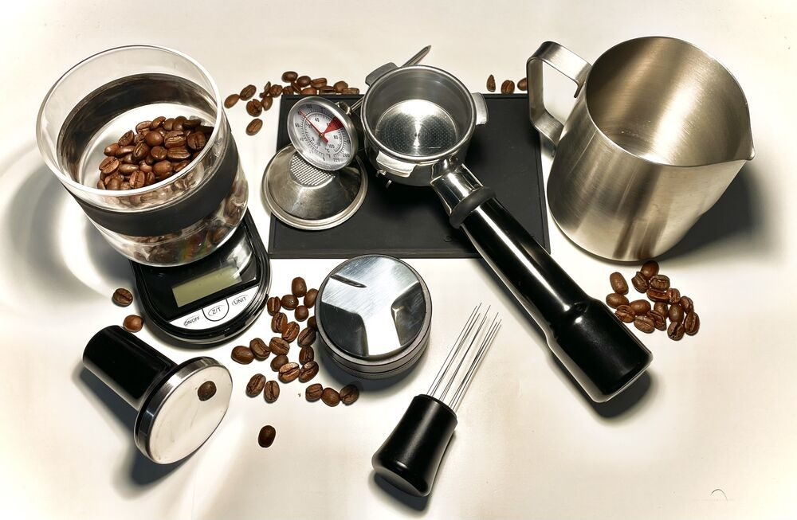

第二枚
店のこと
店のこと
確認できているのは、所在地・電話番号・Instagramです。
「想像してみる」の部分は制作側の想像です。お店の実際の様子・考え・メニューとは関係ありません。
確認できていること
- 店名は「カフェ ガルボ」、業種はカフェ
- 所在地は静岡県富士市富士町８−８
- 電話番号は0545-61-4010
- Instagramは @cafe_garbo_
- 営業時間・定休日・メニュー・価格・ご予約・駐車場は準備中

想像してみる
字幕だけで伝わる店
由来は分かりません。制作側は、言葉が少なくても伝わる、静かなお店かもしれないと想像しました。実際のお店の姿ではありません。